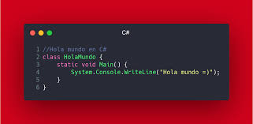

Lenguaje de Programación: C#
Características principales
- Lenguaje orientado a objetos
- Desarrollado por Microsoft, basado en la plataforma .NET
- Compilado a lenguaje intermedio y ejecutado por la CLR
- Soporta programación asíncrona y orientada a eventos
- Multiplataforma (gracias a .NET Core y .NET 5+)
- Fuertemente tipado y con recolección automática de basura
- Ideal para aplicaciones de escritorio, web, móviles y videojuegos (con Unity)
Tipos de datos
- Primitivos: int, float, double, decimal, bool, char, byte, short, long
- Referencia: string, object, arrays, clases, interfaces
- Otros: enum, struct, nullable (por ejemplo:
int?)
Ventajas
- Moderno, potente y de sintaxis clara
- Gran integración con herramientas Microsoft (Visual Studio, Azure)
- Buen manejo de memoria (garbage collector)
- Versatilidad en desarrollo de aplicaciones de todo tipo
- Soporte para LINQ, programación funcional y asincronía
Desventajas
- Dependencia del ecosistema Microsoft (aunque cada vez menos)
- Consumo de recursos más alto que lenguajes como C o C++
- Menos popular que Java o Python fuera del entorno Windows
- Curva de aprendizaje moderada para quienes no conocen .NET
Codigo del ejemplo: "hola mundo"
